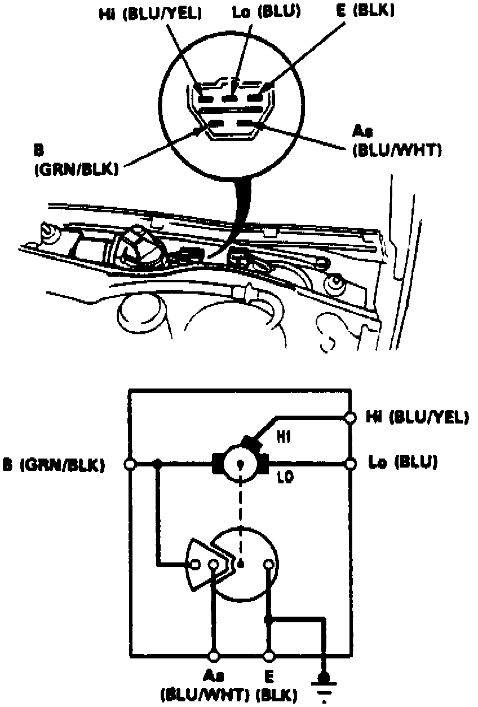

Wiper Motor: Testing and Inspection
1. Remove windshield wipers, windshield lower cover attaching screws and lower cover.2. Remove hood seal and air scoop, then pry off trim clips.
Fig. 15 Wiper Motor Connector:

3. Disconnect connector from wiper motor, Fig. 15.
4. Connect battery positive voltage to terminal green/black terminal and negative to blue terminal, low speed motor operation should be indicated.
5. Connect battery positive voltage to green/black terminal and negative to blue/yellow terminal, highs speed motor operation should be indicated.
6. If tests are not as indicated, replace wiper motor.
7. Reconnect wiper motor connector.
8. Connect suitable voltmeter between terminals As and E, turn wiper switch On, voltmeter should alternately indicate 0 to more than 4 volts.